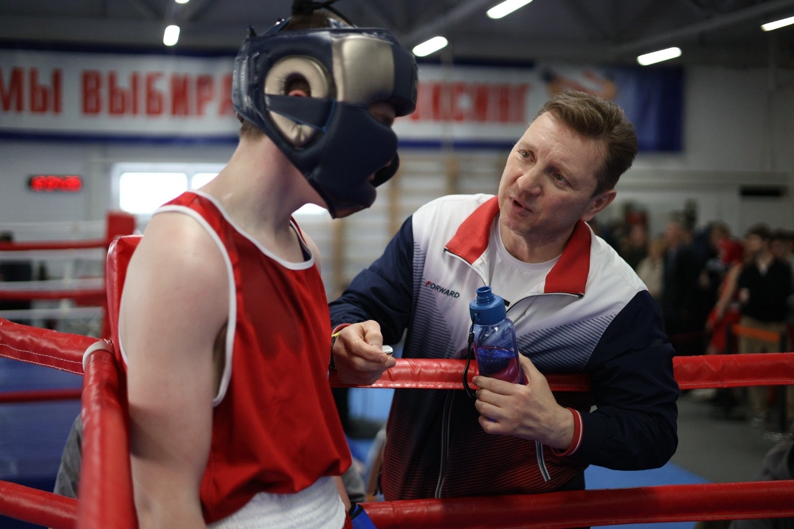
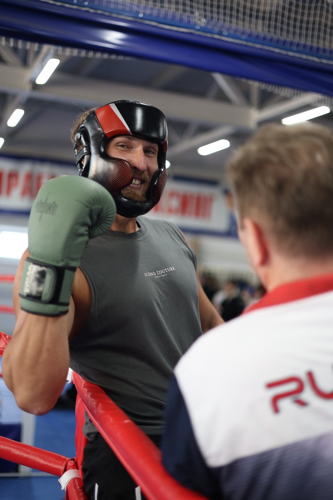
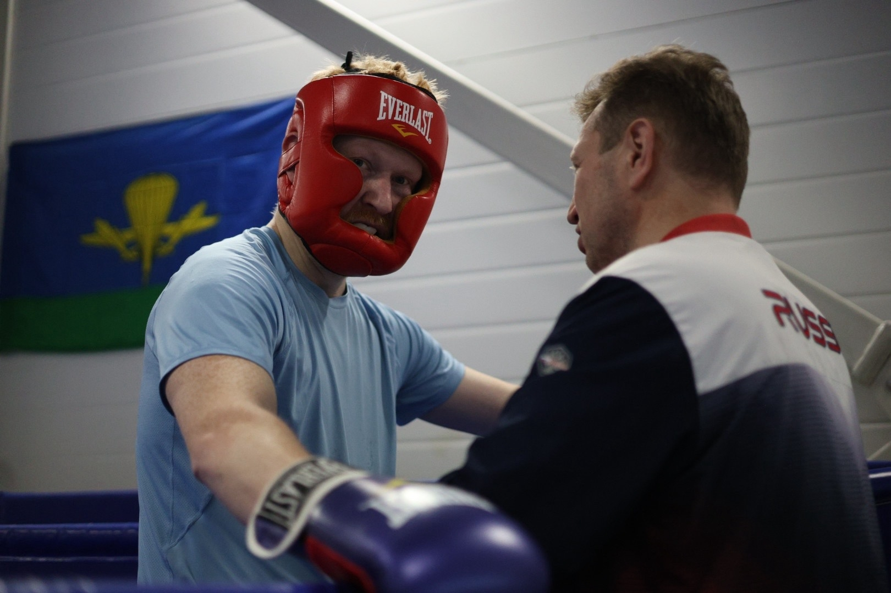
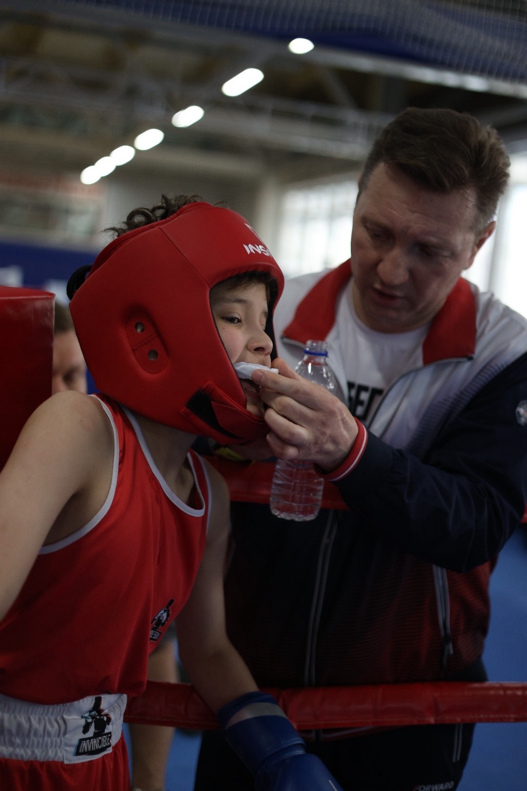
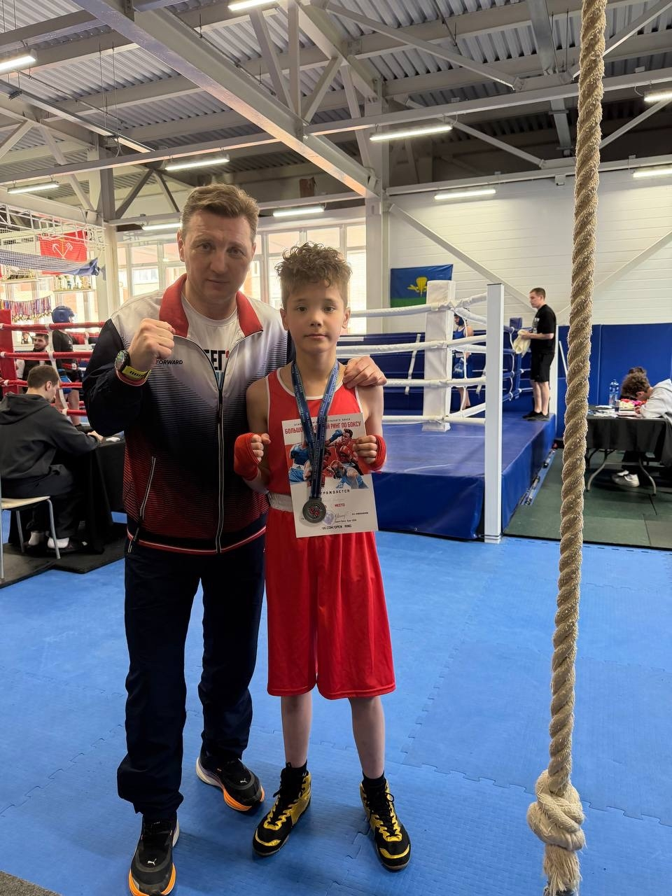
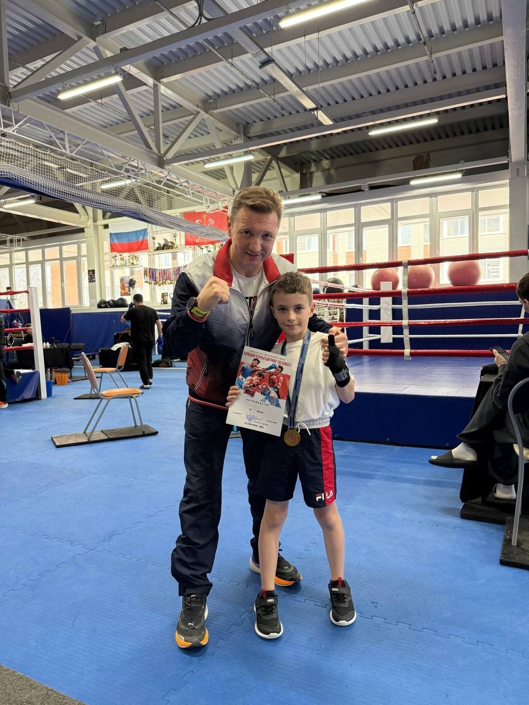
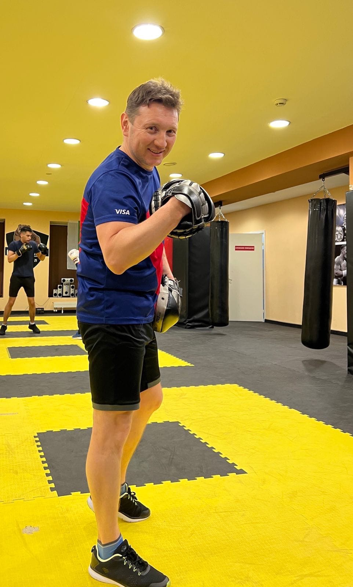

Расписание
Сезон 2025 – 2026
Загрузка расписания…
О клубе
Добрый Питер — боксерский клуб в Санкт-Петербурге для тех, кто хочет стать сильнее, увереннее и выносливее.
У нас тренируются люди с разным уровнем подготовки: от новичков, которые впервые надевают перчатки, до спортсменов, выступающих на соревнованиях. Тренировки ведут опытные тренеры и действующие спортсмены — они помогают поставить технику, развить физическую форму и постепенно выйти на новый уровень.
Мы за честную работу, дисциплину и дружескую атмосферу. Здесь не нужно «уже уметь боксировать» — достаточно прийти с желанием заниматься. Остальному научим.
Добро пожаловать в боксерский клуб «Добрый Питер».
Здесь становятся сильнее — без лишнего пафоса, но с настоящей работой.






Тренер

Некрасов Валерий Владимирович
Тренер высшей квалификационной категории с тренерским стажем с 2001 года.
Валерий Владимирович готовит спортсменов разного уровня — от начинающих боксеров до участников крупных соревнований. Его воспитанники становились победителями и призерами Чемпионатов Республики Коми и Северо-Западного федерального округа России, а также участвовали в Первенстве России.
Под его руководством 7 спортсменов выполнили норматив кандидата в мастера спорта.
В работе Валерий Владимирович сочетает дисциплину, внимательность к технике и индивидуальный подход. Его задача — не просто провести тренировку, а помочь спортсмену стать сильнее, увереннее и выйти на новый уровень в боксе.